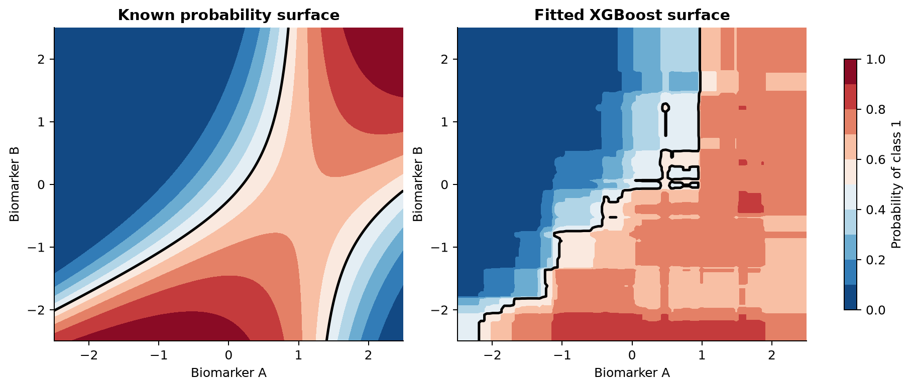
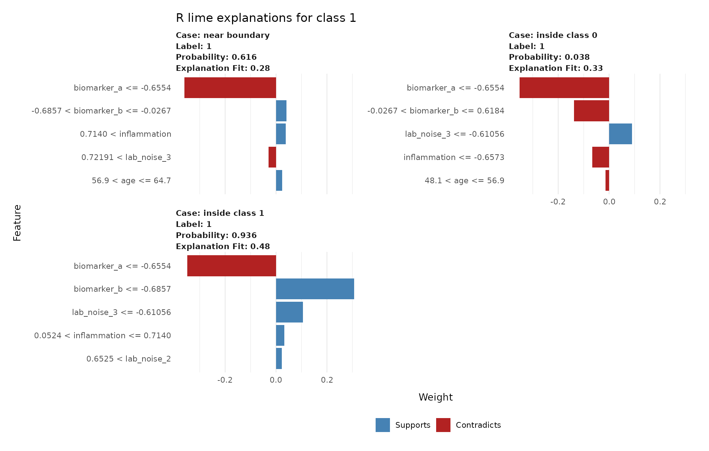
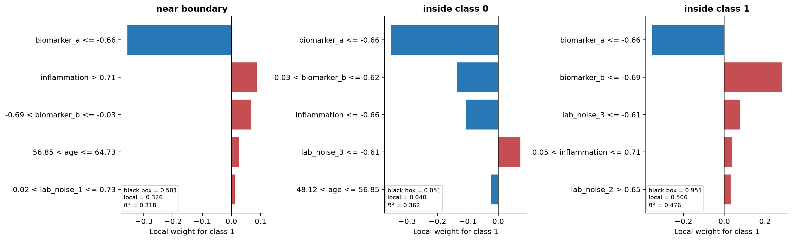

2 warning: false
f— execute: echo: false
3 Using LIME in R and Python
3.1 Packages and implementation versions
This chapter uses the R package lime 0.5.4 and the original Python package lime 0.2.0.1. The R and Python projects implement the same framework but are not ports of one another. Their defaults differ enough that identical weights should not be expected.
The fitted model is XGBoost. Its role is deliberately small: fit a nonlinear classifier, supply class probabilities, and let LIME probe it. The simulation, split, and selected sample IDs are stored in shared files so both languages begin from the same rows.
library(xgboost)
library(lime)
library(ggplot2)
packageVersion("lime")
packageVersion("xgboost")[1] '0.5.4'
[1] '3.2.1.1'import numpy as np
import pandas as pd
import matplotlib.pyplot as plt
import xgboost as xgb
from lime.lime_tabular import LimeTabularExplainer
from sklearn.metrics import accuracy_score, roc_auc_score
import importlib.metadata
print(importlib.metadata.version("lime"))
print(xgb.__version__)0.2.0.1
3.4.1The Python API documentation sometimes follows the repository’s development branch. In the released 0.2.0.1 package used here, score is a scalar and local_pred is a one-element array for the most recently fitted class explanation. Code that assumes both are dictionaries will fail with this release.
3.3 Known truth and fitted surface
The left panel of Figure 3.1 fixes the other predictors at their training medians and shows the known probability as biomarker A and biomarker B vary. The interaction bends the boundary. The right panel shows the XGBoost fit under the same conditions. Its stepped surface is typical of a tree ensemble.

Model fitting is kept identical in purpose. Small prediction differences remain because the R and Python XGBoost interfaces and released library versions are not guaranteed to construct byte-for-byte identical ensembles.
dtrain <- xgb.DMatrix(
as.matrix(train[, feature_cols]),
label = train$outcome
)
fit <- xgb.train(
params = list(
objective = "binary:logistic",
eval_metric = "logloss",
max_depth = 3,
eta = 0.05,
subsample = 0.85,
colsample_bytree = 0.9,
nthread = 1,
seed = 2026
),
data = dtrain,
nrounds = 250,
verbose = 0
)
test_probability <- predict(fit, as.matrix(test[, feature_cols]))
test_class <- as.integer(test_probability >= 0.5)
auc <- function(y, p) {
r <- rank(p)
n1 <- sum(y == 1)
n0 <- sum(y == 0)
(sum(r[y == 1]) - n1 * (n1 + 1) / 2) / (n1 * n0)
}
cat("AUC:", round(auc(test$outcome, test_probability), 3), "\n")
cat("accuracy:", round(mean(test_class == test$outcome), 3), "\n")AUC: 0.775
accuracy: 0.713fit = xgb.XGBClassifier(
n_estimators=250,
max_depth=3,
learning_rate=0.05,
subsample=0.85,
colsample_bytree=0.9,
eval_metric="logloss",
random_state=2026,
n_jobs=1,
)
fit.fit(train[feature_cols], train["outcome"])
test_probability = fit.predict_proba(test[feature_cols])[:, 1]
test_class = (test_probability >= 0.5).astype(int)
print("AUC:", round(roc_auc_score(test["outcome"], test_probability), 3))
print("accuracy:", round(accuracy_score(test["outcome"], test_class), 3))AUC: 0.779
accuracy: 0.717The saved cases were selected from the fitted Python model: one probability near 0.5, one near 0.05, and one near 0.95. They are held-out observations. Selection by prediction is appropriate here because the purpose is to compare model behaviour in different regions, not to estimate performance from these three rows.
case_probability <- predict(fit, as.matrix(cases[, feature_cols]))
data.frame(
sample_id = cases$sample_id,
case_type = cases$case_type,
probability_class_1 = round(case_probability, 3)
) sample_id case_type probability_class_1
1 S0388 near boundary 0.616
2 S0125 inside class 0 0.038
3 S0029 inside class 1 0.936case_probability = fit.predict_proba(cases[feature_cols])[:, 1]
pd.DataFrame({
"sample_id": cases["sample_id"],
"case_type": cases["case_type"],
"probability_class_1": np.round(case_probability, 3),
}) sample_id case_type probability_class_1
0 S0388 near boundary 0.501
1 S0125 inside class 0 0.050
2 S0029 inside class 1 0.9503.4 Create a LIME explainer
An explainer stores information about the training predictors and the fitted model. It should receive training rows only. Supplying the test set would leak its distribution into the explanation procedure.
explainer <- lime(
x = train[, feature_cols],
model = fit,
bin_continuous = TRUE,
n_bins = 4,
quantile_bins = TRUE
)bin_continuous = TRUE is the R default. Each numerical predictor is divided into four quantile bins. The interpretable features indicate whether a value belongs to an interval. With bin_continuous = FALSE, use_density = TRUE samples a numerical feature from a kernel density estimate. Setting use_density = FALSE uses a normal distribution estimated from the training column.
explainer = LimeTabularExplainer(
training_data=train[feature_cols].to_numpy(),
mode="classification",
feature_names=feature_cols,
class_names=["class 0", "class 1"],
discretize_continuous=True,
discretizer="quartile",
feature_selection="auto",
random_state=2026,
)Python also discretizes numerical predictors into quartiles by default. Other built-in discretizers are "decile" and supervised "entropy". If discretization is off, numerical perturbations come from normal distributions using training means and standard deviations. sample_around_instance=True centers those normal draws on the explained row instead of the training mean. That option does not create conditional samples and has no effect on predictors converted to categorical bins.
The class names in Python must follow the order returned by the prediction function. Check it rather than guessing:
print(fit.classes_) # [0, 1]
print(fit.predict_proba(cases[feature_cols]).shape) # three rows, two classesFor this model, probability column 0 is class 0 and column 1 is class 1. The R method for xgb.Booster names its two probability columns "1" and "0". We therefore request label "1" in R and integer label 1 in Python.
3.5 Explain the three observations
The code requests five features and 5,000 perturbations for the class 1 probability. One class is explained per call so there is no ambiguity about the reported fidelity score.
set.seed(2026)
explanations <- explain(
x = cases[, feature_cols],
explainer = explainer,
labels = "1",
n_features = 5,
n_permutations = 5000,
feature_select = "auto",
dist_fun = "gower"
)
suppressWarnings(plot_features(explanations))
lime feature plots for the three selected observations.python_explanations = {}
for _, row in cases.iterrows():
explanation = explainer.explain_instance(
data_row=row[feature_cols].to_numpy(dtype=float),
predict_fn=fit.predict_proba,
labels=(1,),
num_features=5,
num_samples=5000,
distance_metric="euclidean",
)
python_explanations[row["sample_id"]] = explanation
explanation.as_pyplot_figure(label=1)
plt.title(f"{row['case_type']}: class 1")
plt.tight_layout()
plt.show()
Read each plot in local, class-specific language. A positive weight supports class 1 in the surrogate fitted around that row. A negative weight opposes class 1. An interval such as biomarker_a <= -0.66 is a binary interpretable feature. Its weight is not a per-unit slope of biomarker A.
Comparing the cases with the known surface gives a useful check. Biomarker A and biomarker B should usually appear because the true probability depends strongly on them. Inflammation and age may appear with smaller weights. A noise feature can still appear because XGBoost fitted a finite noisy sample and LIME fitted another finite artificial sample. Neither procedure knows the data-generating equation.
3.6 Inspect the explanation instead of only plotting it
3.6.1 R output fields
explain() returns one row per selected feature, with explanation-level values repeated down those rows.
explanations[, c(
"case", "label", "label_prob", "model_r2",
"model_prediction", "model_intercept", "feature",
"feature_value", "feature_weight", "feature_desc"
)]case label_prob model_r2 model_prediction feature
1 0.616 0.279 0.210 biomarker_a
2 0.038 0.329 0.061 biomarker_a
3 0.936 0.484 0.515 biomarker_a
Five feature rows are returned per case. Explanation-level values repeat.predictioncontains the original model probabilities for all classes.datacontains the original row being explained.labelis the class being explained andlabel_probis the black-box probability for that class.featureis the original column name.feature_valueis its value in the explained row.feature_descis the human-readable bin or condition.feature_weightis the coefficient in the local ridge regression.model_interceptandmodel_predictionbelong to the local surrogate.model_predictionshould be compared withlabel_prob, but they need not be equal.model_r2is the weighted coefficient of determination on the artificial neighborhood. Values closer to one indicate that the selected local model reproduces more of the variation in black-box probabilities. A low value warns that the coefficients are a weak summary of that neighborhood.
The first artificial row is the observation being explained. Its black-box probability can differ substantially from model_prediction even when the overall weighted fit is moderate. Inspect both the pointwise difference and model_r2.
3.6.2 Python attributes
row_id = cases.loc[cases["case_type"] == "near boundary", "sample_id"].iloc[0]
explanation = python_explanations[row_id]
print("black-box probabilities:", explanation.predict_proba)
print("feature descriptions and weights:", explanation.as_list(label=1))
print("raw feature map:", explanation.as_map()[1])
print("local prediction:", float(explanation.local_pred[0]))
print("local weighted R-squared:", float(explanation.score))
print("local intercept:", float(explanation.intercept[1]))black-box probabilities: [0.49943 0.50057]
feature descriptions and weights:
biomarker_a <= -0.66 -0.357
inflammation > 0.71 0.087
-0.69 < biomarker_b <= -0.03 0.068
56.85 < age <= 64.73 0.026
-0.02 < lab_noise_1 <= 0.73 0.012
local prediction: 0.326
local weighted R-squared: 0.318
local intercept: 0.490as_list() returns displayed feature descriptions and weights. as_map() returns feature identifiers and weights. local_pred is the surrogate’s prediction at the explained row. score is the weighted local R-squared. The current released package stores one score and one local_pred for the last class fitted, so separate calls are safest when explanations for several classes must be audited.
model_regressor in explain_instance() can replace the default ridge regression. A replacement must expose coef_ and accept sample_weight in its fit() method. It should also implement a meaningful score() because that value becomes the reported local score. Changing the regressor changes the explanation and should be documented. The default ridge model is the appropriate starting point for this chapter.
For multiclass work, pass the intended numerical class in labels, after checking the prediction-column order. top_labels=k instead asks Python LIME to explain the \(k\) classes with the largest probabilities and overrides labels. R offers the parallel choice between explicit labels and n_labels. Explicit labels are preferable when the scientific question names the class in advance.
Both packages can draw an attractive feature plot when local R-squared is low. Interpret the weights only after checking fidelity and the difference between the local and black-box predictions. A poor surrogate should lead to a changed neighborhood, representation, or surrogate, or to the conclusion that this LIME explanation is inadequate.
3.7 Why R and Python may not give identical LIME explanations
The two implementations share the general algorithm but differ in important details.
| Choice | R lime 0.5.4 |
Python lime 0.2.0.1 |
|---|---|---|
| Default continuous representation | Four quantile bins | Quartile bins |
| Default tabular distance | Gower | Euclidean on scaled interpretable data |
| Default locality | Gower similarity | Exponential kernel, width 0.75 times square root of feature count |
| Undiscretized sampling | Kernel density estimate by default | Independent normal draws |
| Local model | Ridge through glmnet |
Scikit-learn ridge |
| Automatic feature selection | Forward at six or fewer, otherwise highest weights | Same broad rule, separate implementation |
| Random generator | R | NumPy |
The current R default with dist_fun = "gower" uses similarity equal to one minus Gower distance raised to gower_pow. In that path, kernel_width is not used. When another R distance is requested, scaled distance is passed through the same exponential-kernel form used by Python. This detail is easy to miss if an older vignette is read without checking the current function signature and source.
These choices change the artificial rows, their weights, the selected features, and the ridge solution. Agreement in the broad local story is more reasonable to expect than equality of coefficients.
3.8 Number of explanatory features
Vary the feature budget while leaving the observation, perturbation count, and seed fixed. The result records the simplicity-fidelity tradeoff.
one_case <- cases[cases$case_type == "near boundary", feature_cols, drop = FALSE]
r_feature_results <- do.call(rbind, lapply(c(3, 5, 7), function(k) {
set.seed(2026)
ans <- explain(
one_case, explainer, labels = "1",
n_features = k, n_permutations = 5000
)
data.frame(
n_features = k,
model_r2 = unique(ans$model_r2),
selected = paste(ans$feature, collapse = ", ")
)
}))
r_feature_resultsn_features model_r2
3 0.267
5 0.270
7 0.271one_case = cases.loc[cases["case_type"] == "near boundary", feature_cols].iloc[0]
python_feature_results = []
for k in (3, 5, 7):
local_explainer = LimeTabularExplainer(
train[feature_cols].to_numpy(),
mode="classification",
feature_names=feature_cols,
class_names=["class 0", "class 1"],
random_state=2026,
)
ans = local_explainer.explain_instance(
one_case.to_numpy(dtype=float), fit.predict_proba,
labels=(1,), num_features=k, num_samples=5000,
)
python_feature_results.append({
"n_features": k,
"score": ans.score,
"selected": ", ".join(name for name, _ in ans.as_list(1)),
})
pd.DataFrame(python_feature_results)n_features score
3 0.316
5 0.318
7 0.318Adding features cannot be assumed to produce a useful improvement. A small increase in local R-squared may not justify doubling the length of an explanation. Conversely, a very sparse explanation with weak fidelity should not be preferred only because its plot is short.
3.9 Number of perturbations and repeated explanations
Five hundred perturbations require fewer model evaluations than 10,000 but usually have more Monte Carlo variability. There is no universal sufficient count. Complexity of the local surface, number of predictors, feature selection, and available computation all matter.
r_repeats <- do.call(rbind, lapply(c(101, 202, 303, 404, 505), function(seed) {
set.seed(seed)
ans <- explain(
one_case, explainer, labels = "1",
n_features = 5, n_permutations = 1000
)
transform(
ans[, c("feature", "feature_weight", "model_r2")],
seed = seed
)
}))
ggplot(r_repeats, aes(seed, feature_weight, color = feature)) +
geom_hline(yintercept = 0, color = "grey70") +
geom_point() +
geom_line() +
labs(y = "local weight", color = "feature")python_repeats = []
for seed in (101, 202, 303, 404, 505):
local_explainer = LimeTabularExplainer(
train[feature_cols].to_numpy(),
mode="classification",
feature_names=feature_cols,
class_names=["class 0", "class 1"],
random_state=seed,
)
ans = local_explainer.explain_instance(
one_case.to_numpy(dtype=float), fit.predict_proba,
labels=(1,), num_features=5, num_samples=1000,
)
for feature, weight in ans.as_list(1):
python_repeats.append({
"seed": seed, "feature": feature,
"weight": weight, "score": ans.score,
})
repeat_frame = pd.DataFrame(python_repeats)
for feature, part in repeat_frame.groupby("feature"):
plt.plot(part["seed"], part["weight"], "o-", label=feature)
plt.axhline(0, color="grey", linewidth=1)
plt.ylabel("local weight")
plt.legend(bbox_to_anchor=(1.02, 1), loc="upper left")
plt.show()The repeated fits produce visibly different weights and, for less stable features, different selections. Figure 3.2 shows the same issue in the controlled correlated-biomarker experiment used later in the chapter.

Repeat the code with 10,000 perturbations and compare the spread. More perturbations reduce sampling noise but cannot repair an unsuitable distance, implausible perturbations, severe collinearity, or a linear surrogate that is too simple.
3.10 Locality and kernel width
Python scales continuous variables before calculating Euclidean distance. Its default width is 0.75 times the square root of the number of columns. The released code uses the weight exp(-distance² / (2 × width²)).
# R's default Gower path: vary the shape of Gower similarity.
r_locality <- do.call(rbind, lapply(c(0.5, 1, 2), function(power) {
set.seed(2026)
ans <- explain(
one_case, explainer, labels = "1",
n_features = 5, n_permutations = 5000,
dist_fun = "gower", gower_pow = power
)
transform(
ans[, c("feature", "feature_weight", "model_r2")],
gower_pow = power
)
}))
# To study an explicit kernel width instead:
set.seed(2026)
r_euclidean <- explain(
one_case, explainer, labels = "1",
n_features = 5, n_permutations = 5000,
dist_fun = "euclidean", kernel_width = 1
)p = len(feature_cols)
default_width = 0.75 * np.sqrt(p)
python_locality = []
for width in (0.5 * default_width, default_width, 2 * default_width):
local_explainer = LimeTabularExplainer(
train[feature_cols].to_numpy(),
mode="classification",
feature_names=feature_cols,
class_names=["class 0", "class 1"],
kernel_width=width,
random_state=2026,
)
ans = local_explainer.explain_instance(
one_case.to_numpy(dtype=float), fit.predict_proba,
labels=(1,), num_features=5, num_samples=5000,
)
for feature, weight in ans.as_list(1):
python_locality.append({
"kernel_width": width,
"feature": feature,
"weight": weight,
"score": ans.score,
})
pd.DataFrame(python_locality)| Implementation and setting | Local R-squared |
|---|---|
| R, Gower power 0.5 | 0.269 |
| R, Gower power 1 | 0.270 |
| R, Gower power 2 | 0.272 |
| Python, half default width | 0.387 |
| Python, default width | 0.318 |
| Python, twice default width | 0.301 |
The important result is that the weighting rule changes the fitted local problem.
A narrow kernel focuses on very close rows but can leave too little effective information to estimate stable coefficients. A wide kernel is more stable numerically but asks the linear surrogate to cover more of a curved surface. Changing a coefficient’s sign across reasonable widths is evidence that the explanation depends strongly on what counts as local.
3.11 Continuous features and discretization
Discretization changes both the display and the local model. With quartiles, biomarker_a <= -0.66 is a binary condition. Without discretization, biomarker_a has a coefficient attached to its standardized numerical value in Python’s surrogate. The latter looks like a slope but is still local and scale-dependent.
continuous_explainer <- lime(
train[, feature_cols], fit,
bin_continuous = FALSE,
use_density = TRUE
)
set.seed(2026)
r_continuous <- explain(
one_case, continuous_explainer,
labels = "1", n_features = 5,
n_permutations = 5000
)
r_continuous[, c("feature_desc", "feature_weight", "model_r2")]feature_desc feature_weight model_r2
biomarker_a 0.177 0.716
biomarker_b -0.139 0.716
inflammation 0.042 0.716
lab_noise_3 -0.029 0.716
age 0.004 0.716continuous_explainer = LimeTabularExplainer(
train[feature_cols].to_numpy(),
mode="classification",
feature_names=feature_cols,
class_names=["class 0", "class 1"],
discretize_continuous=False,
sample_around_instance=True,
random_state=2026,
)
python_continuous = continuous_explainer.explain_instance(
one_case.to_numpy(dtype=float), fit.predict_proba,
labels=(1,), num_features=5, num_samples=5000,
)
print(python_continuous.as_list(1))
print("score:", python_continuous.score)biomarker_a 0.179
biomarker_b -0.168
inflammation -0.042
lab_noise_3 -0.040
age 0.013
score: 0.718Compare the local score and local prediction, not only the coefficient names. Discretization can make an explanation easier to read while losing within-bin variation. An undiscretized model can fit smooth local changes better but may be harder to communicate and more sensitive to the scaling convention.
3.12 Categorical predictors
R recognizes factors and character columns. Their observed training frequencies define the perturbation distribution. Keep factor levels consistent between training and new data.
Python requires categorical columns to be integer encoded before constructing LimeTabularExplainer. Pass their zero-based column positions in categorical_features and a mapping from integer codes to labels in categorical_names:
# Add a small encoded assay-site example after the seven numerical columns.
training_with_site = train[feature_cols].copy()
training_with_site["assay_site"] = np.arange(len(training_with_site)) % 3
training_array = training_with_site.to_numpy()
feature_names = [*feature_cols, "assay_site"]
site_column = feature_names.index("assay_site")
categorical_features = [site_column]
categorical_names = {site_column: ["site A", "site B", "site C"]}
categorical_explainer = LimeTabularExplainer(
training_array,
feature_names=feature_names,
categorical_features=categorical_features,
categorical_names=categorical_names,
mode="classification",
random_state=2026,
)The prediction function must expect the same integer encoding. Do not pass human-readable labels to LIME while passing one-hot encoded columns to the model unless the prediction function explicitly performs that conversion. The interpretable and model representations may differ, but the transformation between them must be exact.
3.14 Unrealistic perturbations
Figure 3.3 overlays independent perturbations on two strongly correlated measurements. The marginal distribution of each artificial column looks reasonable. Their joint combinations do not.

Useful checks include plotting low-dimensional pairs, comparing nearest-neighbor distances of real and artificial rows, applying domain rules, and recording how much total locality weight falls on implausible rows. In a high-dimensional dataset, a two-dimensional plot cannot prove joint plausibility. A conditional generator or domain-specific simulator may be preferable, but changing the generator also changes the question being answered.
3.15 A regression example
The shared file also contains a continuous phenotype. It depends nonlinearly on biomarker B. Fit an XGBoost regressor, then change only the model mode and prediction function used by LIME.
reg_fit <- xgb.train(
params = list(
objective = "reg:squarederror", max_depth = 3,
eta = 0.05, nthread = 1, seed = 2026
),
data = xgb.DMatrix(as.matrix(train[, feature_cols]), label = train$phenotype),
nrounds = 250,
verbose = 0
)
reg_explainer <- lime(
train[, feature_cols],
reg_fit
)
set.seed(2026)
reg_lime <- explain(
cases[1, feature_cols, drop = FALSE],
reg_explainer,
n_features = 5,
n_permutations = 5000
)
reg_lime[, c("model_prediction", "model_r2", "feature_desc", "feature_weight")]model_prediction model_r2 feature_desc feature_weight
8.46 0.358 biomarker_a <= -0.6554 -4.41
8.46 0.358 -0.6857 < biomarker_b <= -0.0267 -2.51
8.46 0.358 0.7140 < inflammation -0.88
8.46 0.358 56.9 < age <= 64.7 0.31
8.46 0.358 -0.0155 < lab_noise_1 <= 0.7341 -0.07reg_fit = xgb.XGBRegressor(
n_estimators=250, max_depth=3, learning_rate=0.05,
random_state=2026, n_jobs=1,
).fit(train[feature_cols], train["phenotype"])
reg_explainer = LimeTabularExplainer(
train[feature_cols].to_numpy(),
mode="regression",
feature_names=feature_cols,
random_state=2026,
)
reg_lime = reg_explainer.explain_instance(
cases.loc[0, feature_cols].to_numpy(dtype=float),
reg_fit.predict,
num_features=5,
num_samples=5000,
)
print("black-box prediction:", reg_lime.predicted_value)
print("local prediction:", float(reg_lime.local_pred[0]))
print("score:", reg_lime.score)
print(reg_lime.as_list())black-box prediction: 10.477
local prediction: 9.520
score: 0.409
biomarker_a <= -0.66 -3.217
-0.69 < biomarker_b <= -0.03 -1.460
inflammation > 0.71 -0.780
56.85 < age <= 64.73 0.243
-0.02 < lab_noise_1 <= 0.73 0.079The target of the surrogate is now the fitted numerical phenotype prediction. No class or probability column is involved. In the Python regression display, the package provides mirrored positive and negative label maps for visualization. The underlying local regression is fitted once to the numerical output.
3.16 Preprocessing pipelines
LIME must query the exact function used for ordinary prediction. Suppose a model was trained after log transformation, imputation, one-hot encoding, and standardization. Every artificial row must pass through the fitted versions of those steps. Refitting a scaler or imputer on each artificial neighborhood changes the model and is incorrect.
In Python, pass pipeline.predict_proba when a scikit-learn Pipeline begins with preprocessing and accepts original columns. In R, either use a supported fitted workflow or provide predict_model() and model_type() methods whose prediction path applies the stored transformations. Create the LIME explainer from the representation you want to perturb. If the model accepts principal components but the explanation should mention genes, a gene-to-component transformation must sit inside the prediction function. LIME cannot infer that mapping.